2024 Red Rock 紀錄
前言
啟發於浚名的Squamish文（文1、文2），我也分享這趟trip有關的資訊，一來希望可以對未來計畫要來的人有幫助，二來也希望可以啟發原本覺得這類climbing trip很遙不可及的人。
基本資訊
Red Rock是世界級的大岩場，是Alex Honnald的home crag。這裡以很長的多繩距傳攀路線聞名，也有多變的抱石（Sleepwalker就在這邊）。
人員：PH、昊謙、ZH（D4-8）
日期：2024/12/21-29 = D0-D8，D0和D8為交通天
天氣
根據統計，冬天的Red Rock 通常白天可以到10°C以上，清晨則可到0°C上下。這次也差不多是如此。但偶爾風會有點大（不論是晚上或是白天在牆上），所以記得還是多備點衣服，搭帳視情況釘營釘以免帳篷被吹跑（像我們一樣）。
因為早晚、有無曬到太陽、風的差別，有時會需要帶軟殼甚至羽絨上牆。如果打算攀爬時間都穿著，可以直接壓在吊帶底下（也就是先穿外套再穿吊帶），這樣才不會蓋到裝備環和確保環。如果只打算確保和descent時穿，可以放小背包裡由follower背上去，需要時才套上，這時外套如果有下開的拉鏈或是扣子就會比較方便又保暖。
交通
我們三個都離Vegas有點距離，所以都是搭飛機，機票也成為本趟旅程最大支出。如果在加州也可以開車過來，省機票又省租車費。值得注意的是，掛繩器即使不塞進行李也是可以托運的（請參照各家航空公司托運行李規定），但是算是單獨一件托運行李，所以有點虧。這次我傻傻的帶了一個大行李箱，下次應該直接托運大背包，比較省空間。
到Vegas後則是租車，我們租了一台挺小台的休旅車（Hyundai Venue 2021），一大一中的行李箱＋三個背包＋一堆雜物裝蠻滿的，中間一度考慮要不要去租抱石墊來抱石，但發現車根本塞不下。從D0晚上到D7晚上共$469。
Vegas附近好像沒啥警察，大家又開得偏快，容易車不多就不小心飆到100mph，要小心。
住宿
因為本學生很窮QQ，所以我們全部camping，以下是我們住過的campsite，除此之外也可以參考這裡，如果租到大一點的車子 (e.g. Minivan)也許可以考慮睡車上（要注意的是，很多地方都禁止Car camping和overnight parking，例如Red Rock Canyon內，但是據我們觀察好像沒啥在抓，請自行評估）。
Red Rock Campground
是離Red Rock最近的Campground，開車約10分鐘，有Standard（車停帳旁邊，$25/night）或Walk-tos（要走一段，但其實也才3分鐘，$12/night）。要預約（可以當天）但（Walk-tos）看起來是不太會滿。但是每次預約（不管幾天）有$8的Reservation fee，超坑。有廁所、水（我猜是地下水，我直接喝是沒什麼事），沒有垃圾桶。手機訊號很不穩定，有時有有時沒有。
Lovell Canyon
Link: https://lasvegasareatrails.com/lovell-canyon-camping-lovell-canyon-nevada/
免費Campground，開車距離Red Rock約30分鐘，高度（~1500m）比Red Rock Campground（~1000m）高一些所以稍冷一點開進小路後沿路隨意找地方紮，沒水但還是挺讚的。手機訊號蠻好的！
Arizona Hot Spring
Link: https://www.nps.gov/thingstodo/hike-the-arizona-hot-springs-trail.htm
D6這天比較早收，因為要去泡溫泉，六天以來比較像樣的洗澡（？）。開車離Red Rock大約一小時，走進去大約再一小時多，會到Colorado River河畔、Hoover Dam下游，接著往左（下游）走，這邊的trail時常分岔，不太好認，偶有箭頭指引，但總之大致是沿著河畔走往左切上小稜後下切支流，在一個右邊岩壁上有一個洞的地方（穿過去的那種洞）左轉切入支流，沿著支流一路上溯到一個鐵梯就到溫泉了。我們第一個晚上太晚到，到這邊已經天黑了找不到路，只好先在遇到河畔處的空地先紮營（在峽谷裡，沒啥訊號），隔天早上才去泡溫泉。最後上溯那段只是清淺小水流，小心一點的話可以腳不濕，或者直接穿拖鞋過去。
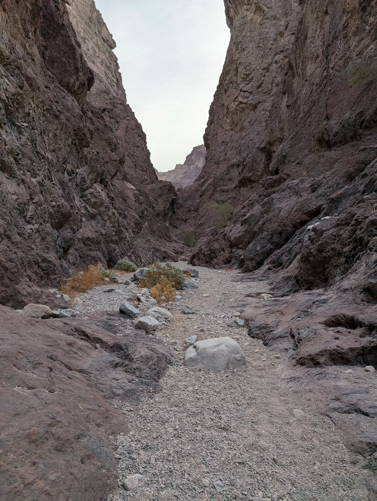
踢進去的下切路
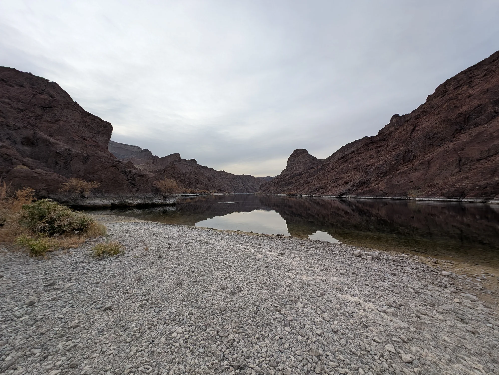
Colorado river
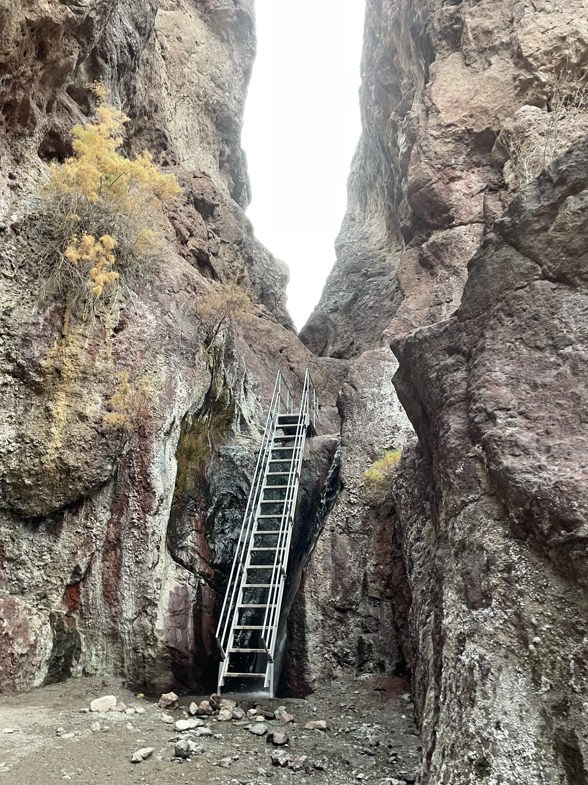
梯子上去就是溫泉了
Las Vegas Harry Reid International Airport
因為大家D8都是一早的飛機，於是C7直接睡機場。我在Terminal 3繞了一陣子，看起來最好的位置是0th floor (Arrival)靠大門那邊，人比較少又有插頭（當然整個機場也都有免費Wifi），除了我們之外也有其他人也睡那邊。我們直接開睡墊來睡，除了有點吵（時不時有機場廣播）外挺完美的。Terminal 1看起來空間小不少，位子比較不好。我們原本打算先check in、過security後在裡面睡，但因為大家在不同的terminal（我跟PH飛Southwest、ZH飛United，美國大多是按航空公司分terminal），且航空公司有最早的check in時間限制（United是2小時、Southwest是4小時，但我在網路上沒找到這個資訊），所以最後就大家一起在T3睡。T1、T3之間有24hr的Shuttle，每15-30分鐘一班。
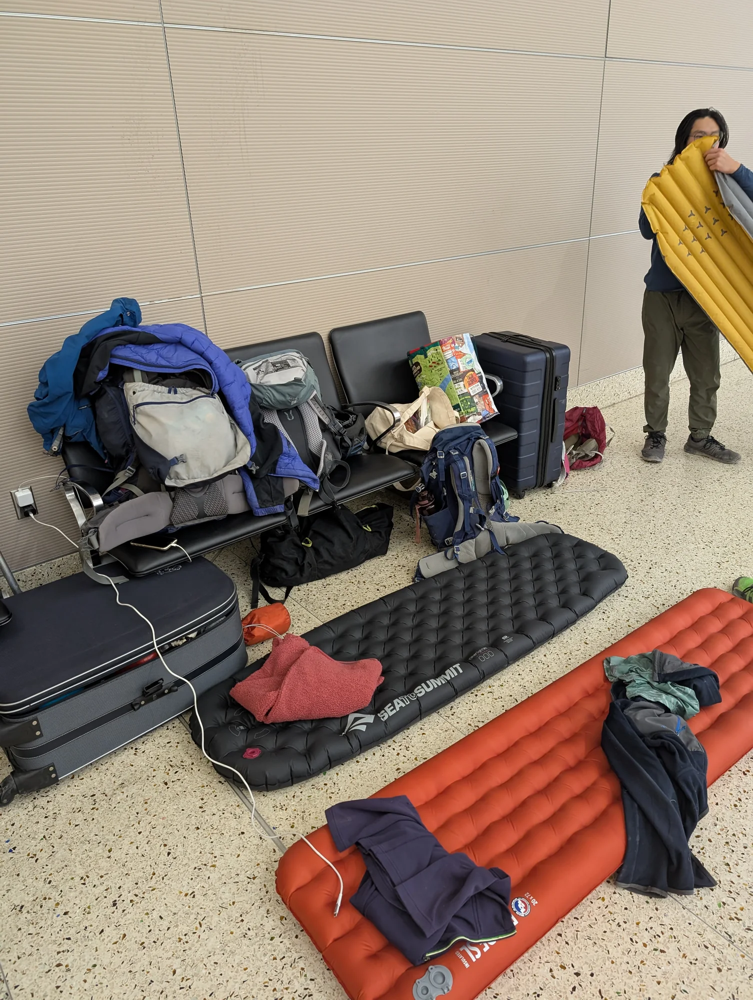
睡在機場的一晚是最豪華的一晚
飲食
我們的生活圈大多圍繞在Red Rock Canyon Road到West Charleston Boulevard，從Campground、麥當勞、Target都在這條路上，還有REI可以買gas還有補缺的裝備，車程距離均在20min以內。
除了D7晚上在Costco吃烤雞（注意：用手抓烤雞很燙）外，其餘全部自炊，早、午餐是土司夾蕃茄和罐頭（鮪魚或雞肉），晚餐幾乎都是義大利麵＋（番茄＋高麗菜＋雞胸肉罐頭）湯。
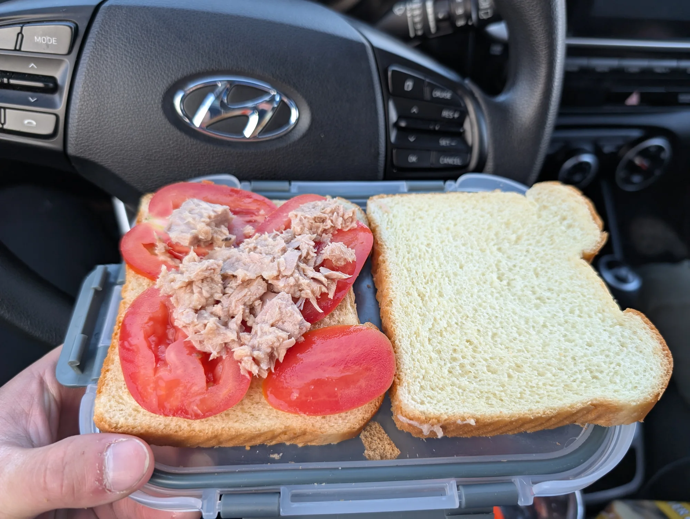
早餐範例
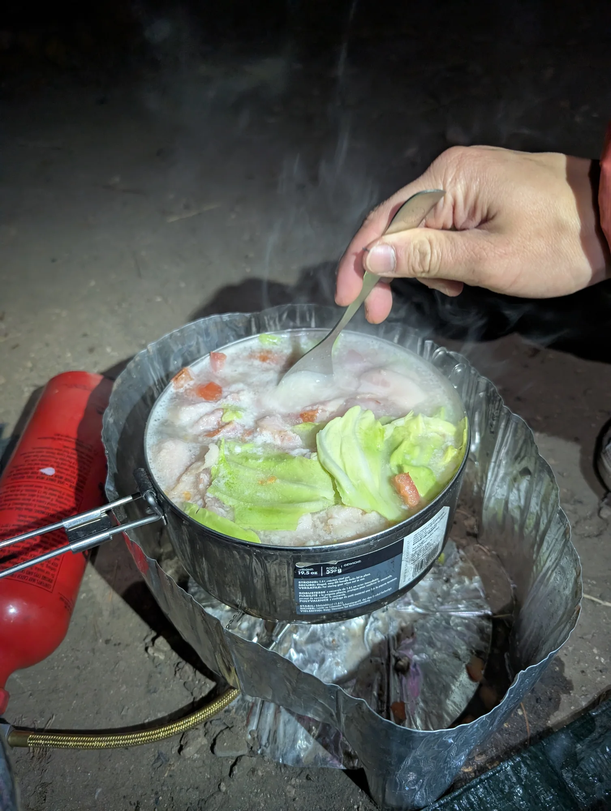
晚餐範例
麥當勞：每天晚上（除了聖誕節那晚）我們幾乎都會去附近的麥當勞，是我們的救星XD。我們會在那邊用McDonald app的Deals（$1的十塊麥克雞塊、如果當地Hockey team第一節有得分的話甚至會送免費薯條、一毛錢都不用花），討論、預習隔天的攀爬區域或路線，順便充電、蹭網路，還有洗頭和擦澡XD。對面的Albertsons東西比Target貴，別去。如果對水質有要求可以去Red Rock Canyon 的visitor center裝水，又或者是在超市結帳區外裝水。
如果是和我們一樣聖誕節去的話，要注意聖誕節前夜很多店會提早關門以及聖誕節當天沒啥店有開。
Red Rock Canyon Logistics
入園門票
每次入園有入園的門票，在Scenic Loop Drive入口處收，但是因為PH買Year pass ($80) 所以我們整車靠他XD，這張pass是算一整車的，並非按人頭計算。
Scenic Loop Drive
大多數的crag（但不是全部，像是Calico Basin就在loop外）在Scenic loop drive周遭，這是一條單向的車道。開放時間依季節而定，我們來的時間是6:00-17:00，但是8:00-17:00要另外收錢（和入園的分開）且要預約，所以我們每天都在8:00前進去。每個Crag附近都有停車場和沒有水的廁所，可以停這邊，整裝後approach。通常Loop drive附近有手機收訊，進到crag裡面就不太容易有。
另外，Guidebook和所有官方資訊都說超時出去要罰錢（爬多繩距可以申請late permit、爬長路線可以申請隔夜的permit），但是我們發現好像沒啥認真在罰，我們有一天大概17:20才出去也沒被罰，甚至有一天我們要趕著走了還有人背著抱石墊要進來抱石，也有人疑似overnight parking。可以自行評估風險決定要不要這樣。
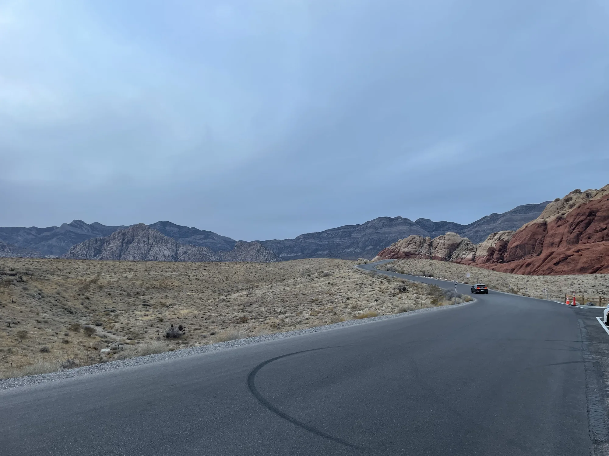
Scenic loop drive
Red Rock Canyon Visitor Center
在Scenic loop閘門後、進入scenic loop之前（也就是你可以來這邊然後直接開出去，不用繞一整圈）這裡有有水的廁所、紀念品店、還有水、Wifi。要洗東西、裝水或買紀念品可以八點前先開進來這邊等他開門。
攀岩
岩質
Red Rock是Aztec Sandstone，通常摩擦力相當好（除了黑黑油油亮亮的那些以外）。形狀相當多變，從類似龍洞那種圓圓的、一塊塊的石磚、到薄片點都有。岩質倒是沒有龍洞感覺那麼紮實，時常感覺空空的（於是到最後都不敲了以免越敲越怕XD），偶爾岩楔敲到岩壁發出的聲音會像是敲到可樂罐一樣空。
Climbing after Rain
因為砂岩吸水後會變得脆弱易斷，這邊的ethics是雨後1-3天不可以爬，取決於每個區域乾的速度，近期降雨紀錄可以參考Wet rock police。雖然據我們觀察也不是所有人都有嚴格遵守這個policy，但附近也有一些石灰岩岩場可以爬，以及不少national parks。底下是我們出發前列的一些Back up plans：
- Go to other places to climb:
- Joshua Tree National Park (<4 h driving from Vegas): Renowned granite climbing destination with a stunning desert landscape.
- High Desert in California (<3 h driving from Vegas): A very desert place. No fee to camp, and fire should be fine: https://www.mountainproject.com/route/121833433/contagion
- Other:
- Death Valley National Park (<2 h driving from Vegas)
- Zion National Park (~3 h driving from Vegas)
- Lake Mead National Recreation Area and Hoover Dam (1 h driving from Vegas)
- Mojave National Preserve (~2 h driving from Vegas)
- Valley of Fire State Park (~1hr drive)
Guidebook
Mountain Project
https://www.mountainproject.com/area/105731932/red-rocks
攀岩資訊網站，也有app可以下載。路線比guidebook新，有一些guidebook沒有的新路線，且有網友留言可以看評論，爬路線之前常會先看看網友怎麼說，特別是傳攀，看看評價如何、保護如何、用哪些岩楔、descent如何等等。App內有地圖可以定位，也可以下載離線路線資訊（注意：區域下載只會有文字資訊不會有圖片，圖片要另外點進去下載）。
Red Rocks: A Climber’s Guide
https://www.redrocksguidebook.com/
資訊完整詳細，含路線資訊、地圖、Topo、索引等等，有一本在手還是很好用的，故推薦大家去弄一本。我出發前有借到一本。Visitor center有賣。
Southern Nevada Bouldering
https://www.snellpress.com/snb3
抱石guidebook，我們沒有因為也沒計劃要爬抱石。Visitor center有賣。
Mojave Limestone: A Climber’s guide
https://www.mojavelimestone.com/
石灰岩的guidebook，我們沒有，爬石灰岩那天靠MP。Visitor center有賣。
裝備
- 70m繩*1
- 傳攀岩楔（BD C4 cam #6-#.4 (double: #3, 2, 1, and .5)、Metolius Master Cam #00-#6、Black Diamond Wired Stopper Set*2、 Camp Tricam Set (Brown-White)、Nut tool*2、Alpine quickdraws*10）
- Sport quickdraws *19
- 掛繩器（11 ft ）
路線札記
D1 12/22
第一天想說趁手指有力先來爬個難線。
USS Crag
Port of Call 5.7: 簡單的熱身，是蠻簡單但第一條就拔了一個點下來= =。
Tsunami wall
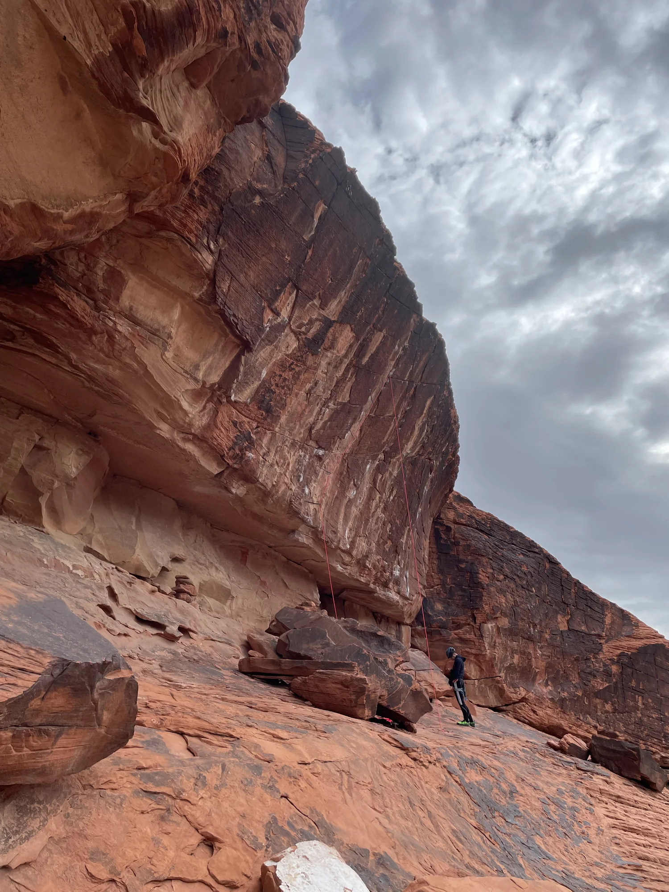
Tsunami wall，牆不高、路線強度卻挺高的
Tremor 5.10a: 超短，其實起攀不太容易。
Threadfin 5.12b/c: Guidebook的三顆星路線，確實超級酷，手點大多不差，起攀和完攀附近各一個難關，唯guidebook上的路線在完攀莫名奇妙的拐到右邊的SOS，明明直上就有anchor，我是直上，拐過去的摸了一下點不太好就沒試了，這條動作有試完，不知道耐力夠不夠爬完。
SOS 5.13a: 起攀後下一步的側/倒拉那一動指力不夠做不到，後面還有一動做不到，快扣差點收不下來= =，最後是靠Threadfin的anchor收下來的，即使是這樣還是很難收。
California 12a
California 12a 5.12b/c: Mountain Project上面留言說這條有個點斷掉之後變成至少13a了，但因為經過而且動作看起來很酷、而且前三個快扣有fixed draw就去玩玩看。起攀後的gaston如果臂展不夠蠻吃虧的，接著的動態因為高度很低就沒試了。
Going to california 5.10b: Guidebook 沒有的運攀，在California 12a左邊，Mountain Project説是editor’s favorite route of the wall，感覺沒啥人在爬，PH lead，我second，其實不太簡單，尤其點要找一下。
D2 12/23
原本想說今天要不要爬長路線（Olive oil），但是想想覺得我實在是有一陣子沒有傳攀了，還是先找一些簡單點的，複習一下順便檢視一下狀態。今天爬的都在Willow Springs，有很多approach很短的傳攀，就在路旁而已。
Ragged Edge Area
Ragged Edges 5.8: 很漂亮的一條裂隙，兩繩距，中間有Anchor。我lead第一段，感覺還行，PH lead第二段，run out偏長，最後top out從旁邊走下來。
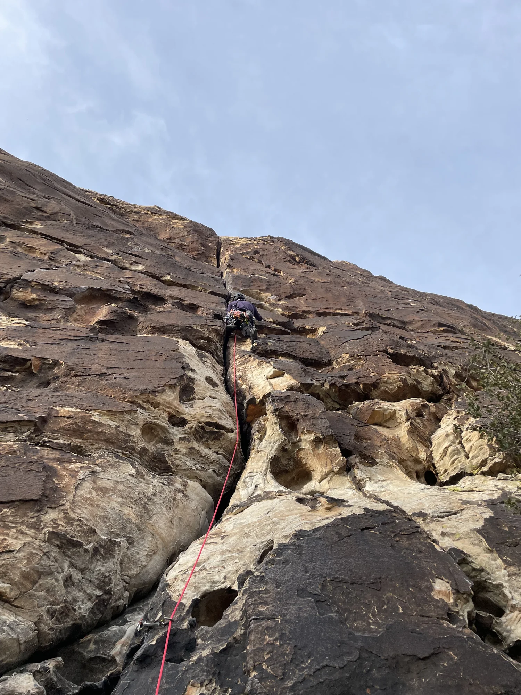
我爬P1
Outhouse Wall
Spiderline 5.7: 底下大裂隙蠻舒服的，最大用到#5，上到一個大平台後接face面，右邊有漸寬的裂隙。從平台看起來，face面前段要run out好一段之後才有看起來有辦法protect的地方，裂隙又太寬、底下又都把大號的用掉了，看了很久之後孬了不敢爬，只好架站換PH上來lead完後段，先在平台處插一支#4防止摔下平台，接著的確要run out 2m左右才有保護可放，保護點大多很淺。今日勇氣值耗盡。
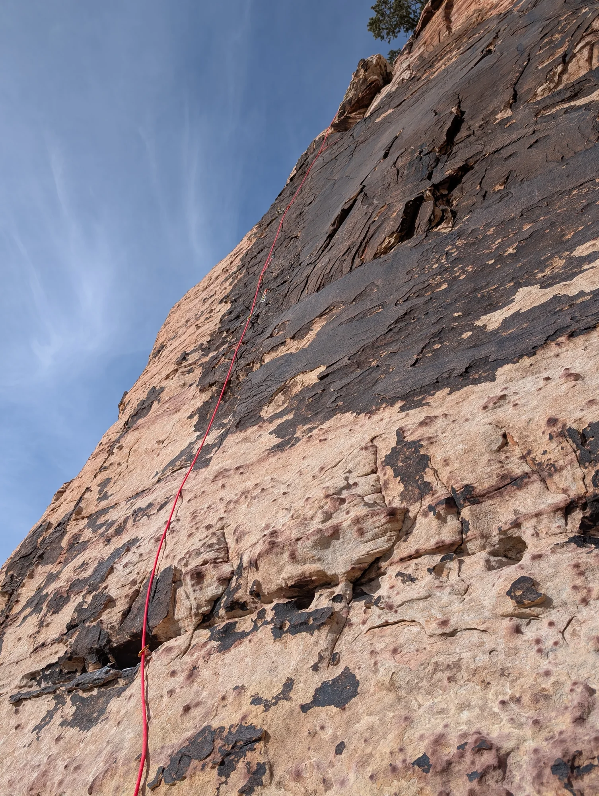
讓我孬起來的face
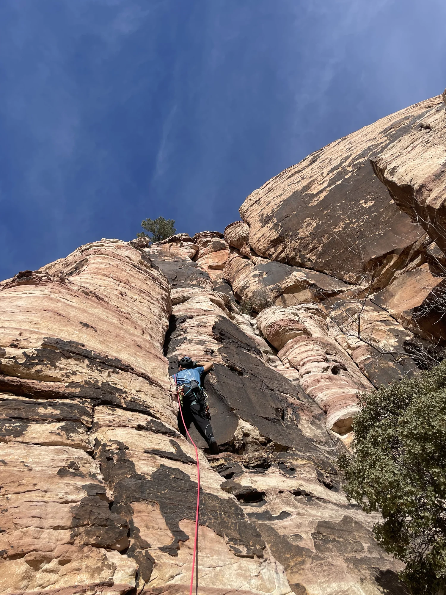
底下的寬裂隙還好
Children’s Crag
Peaches 5.9 (variation): 很酷的內角路線，PH lead，上面有兩個variation，PH走比較難的5.9寬裂隙，是個有點用力的lay back後要把整個身起塞進裂隙的難關，最大用到#5，路線長度36米，我們沒有照guidebook從旁邊走下來，因為看起來十分不好走，以6米輔繩接70米繩後單股垂降。
D3 12/24
原本今天的目標是爬Olive oil，是PH這趟的主要目標（長路線），但因為我傳攀先鋒能力太弱、加上在Red Rock攀爬、的經驗不還不足、傳攀效率不夠高、還有心臟太小顆，討論之後覺得嘗試某些長approach、descend不明、4繩距以上路線可能會有風險，畢竟冬天天黑非常早，沙漠晚上氣溫驟降等因素可能會導致危險，再加上評估過後覺得最好還是要有留守機制才能保證安全，最後決定換成這條Dark shadows。
Mescalito
Dark Shadows 5.8: 此路線坐落在Mescalito山峰的北側，基本上是背陽側，approach進去到起攀處約50分鐘，通常有兩種爬法，一種是爬前四個pitch (106m) 後垂降，一種是一路十個pitch後summit Mescalito (303m)。我們考量我們的速度偏慢，覺得沒把握summit，就只爬了前四個pitch。這條的好處是和其他的熱門路線相比（如Olive oil、Cat in a hat等）繩距少而且一路都有bolt anchor，且approach和descent單純，比較適合新手如我；小缺點是起攀附近是小溪，垂降落繩時難以避免繩至少一部分落到水裡。
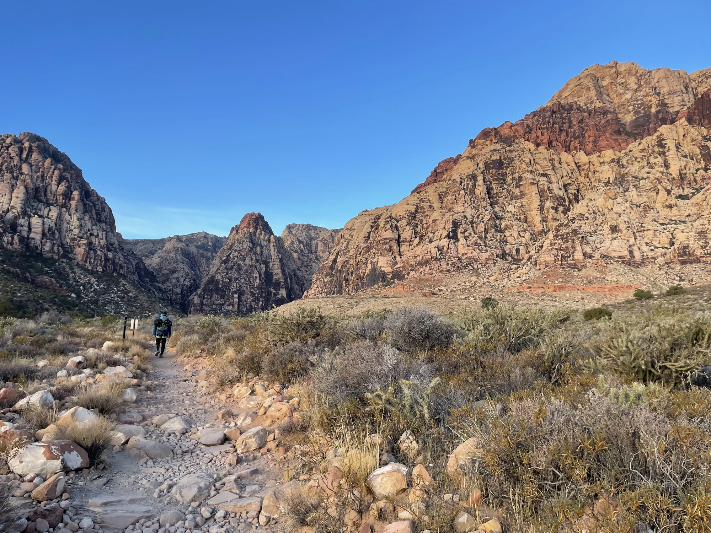
Approach to Mescalito
這條第一個繩距前段沒辦法protect，但是打了兩個bolt（有點高），我們爬的時候恰好碰到另一組，考慮到我們動作比較慢就讓他們先，順便請他們幫我們把第一個快扣掛好，賺爛。爬完這段之後剩下一段都是把手的直接runout就到第一個anchor，考量後決定link up下一個pitch。接下來是一段內角指裂隙，雖然深的地方不少但是裡面凹凸不平，有點難放好的protection，我塞了#.5、#1各一。結束後一個把手橫渡到anchor 2，因為前面放得不好太緊張直接衝到anchor，忘記塞個幾隻保護follower，下次改進。
三四繩距因為我的勇氣值用得差不多了，就給PH連lead兩段。第三繩距也是內角裂隙，第四繩距則比較短，沿著裂隙斜斜上到平台。
整體來說是條風景好、適合入門的好路線，但因為是熱門線所以可能會很多人想爬，尤其是假日。我們大概08:40開爬，13:00結束垂降回到地面。
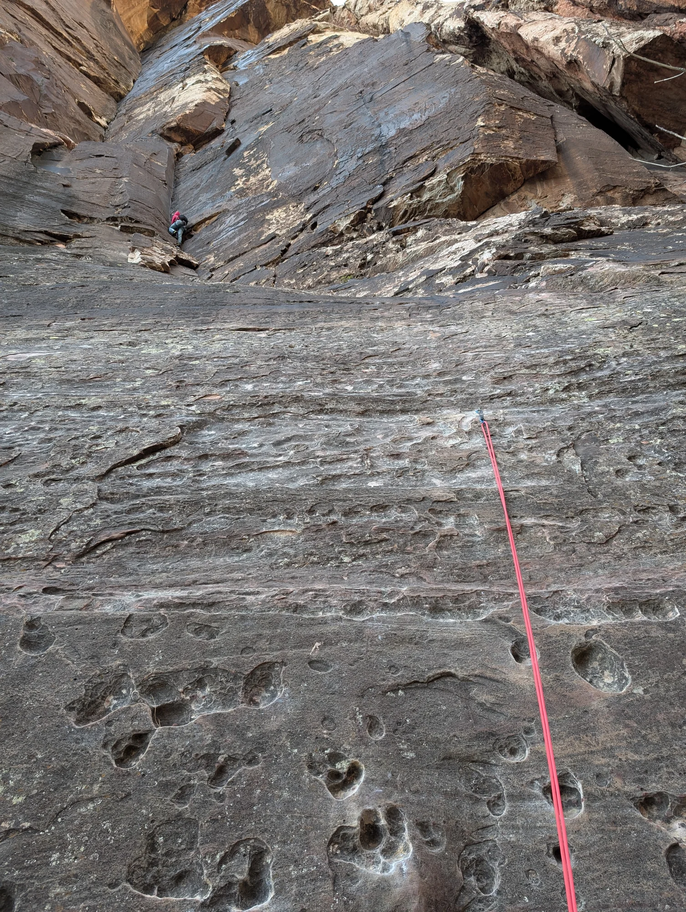
P1，好心人幫我們先掛好第一顆bolt
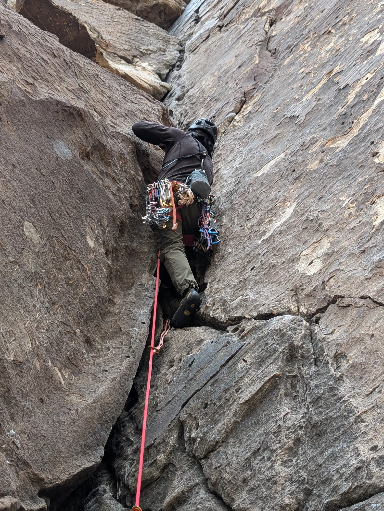
PH on P3
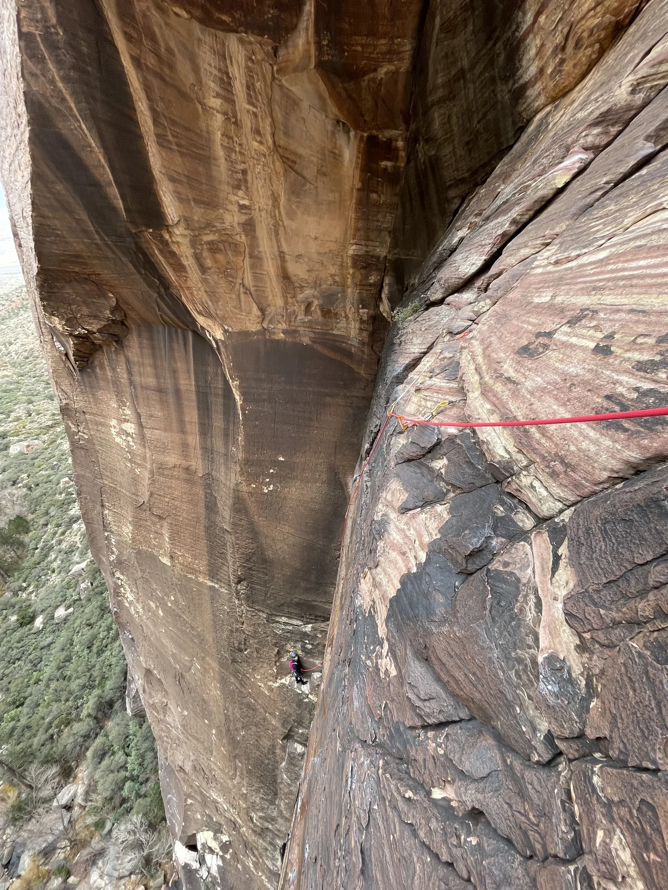
P4
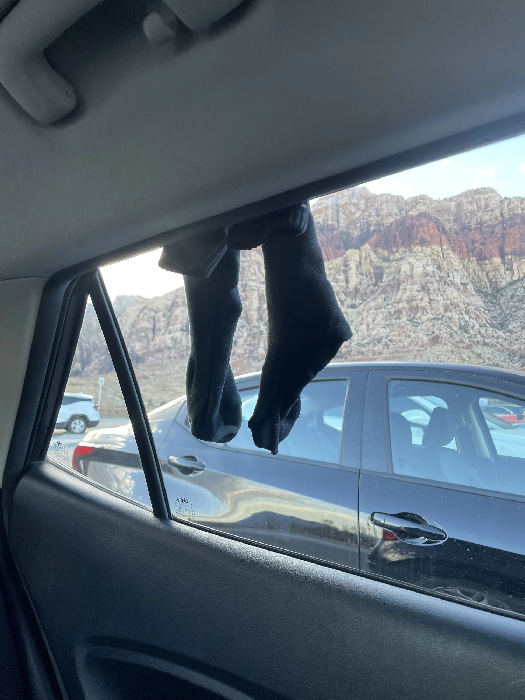
我不小心踩進起攀的那攤水，只好把襪子夾在車外風乾
D4 12/25
The Gun Club
因為昨天下了點雨，根據local ethics至少24-72小時不可以爬砂岩，所以改爬附近的小石灰岩運攀crag，叫The Gun Club，高度很矮，像大砲岩那樣。約十點到，那邊已經擠滿人了，大家都是因為下雨改計劃。順帶一提，中間來了一組中國裔美國人，吃橘子亂丟橘子皮，我要走的時候找不到水壺，找半天問了他們之後才知道他們收走了= =。底下幾條路線都是輕鬆愜意，對面的South Wall好像也有5.12似乎也有人在試，但我們就沒過去了(背陽面實在太冷了)。
Trigger Happy 5.7
Mini-gun 5.6: ZH先鋒！
FN Five-SeveN 5.7+
Sure Fire 5.9
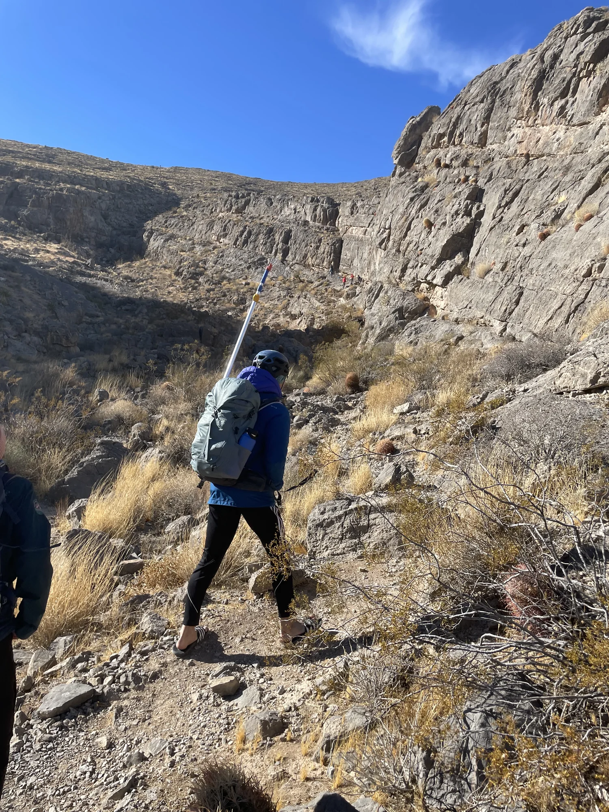
和UIUC climbing club借的掛繩器實在是有夠長
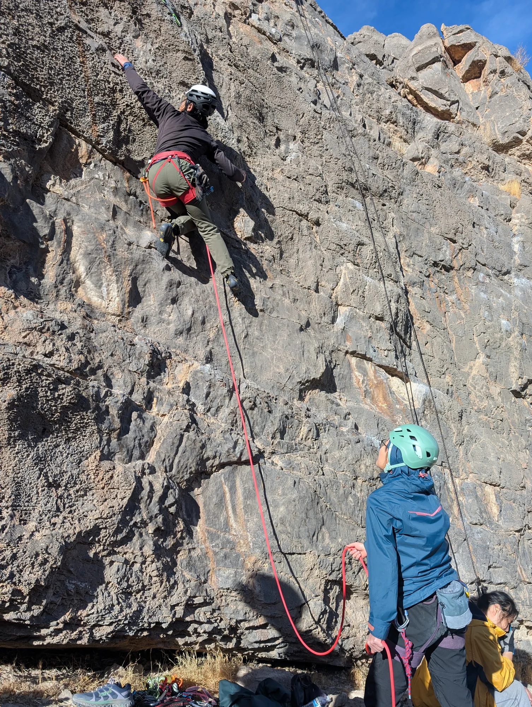
PH和ZH，忘記是爬哪一條了。
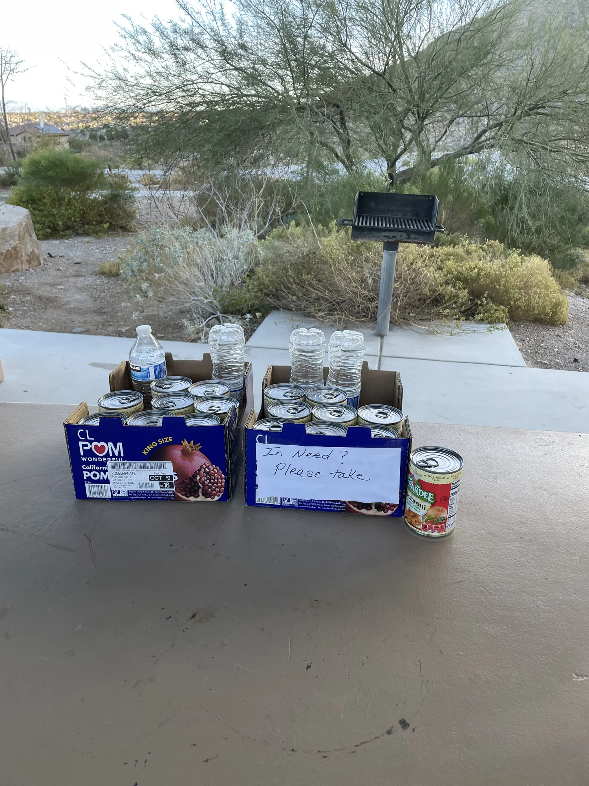
停車場處放的
Calico Basin Boulders
是一條抱石步道，沿路都可以看到很多人在抱石，我們沒有抱石墊沒辦法認真爬，只能找一些簡單的隨便solo一下。底下這兩條都可以從後面很容易的走下來。
Fin Backside V0
Betty V1
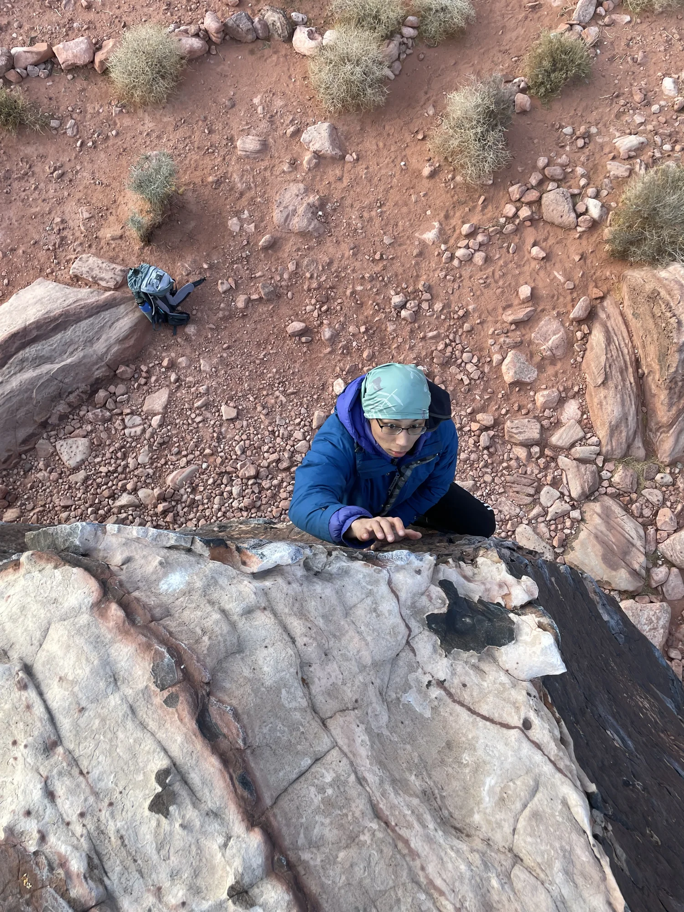
沒墊子只好solo一些簡單的東西
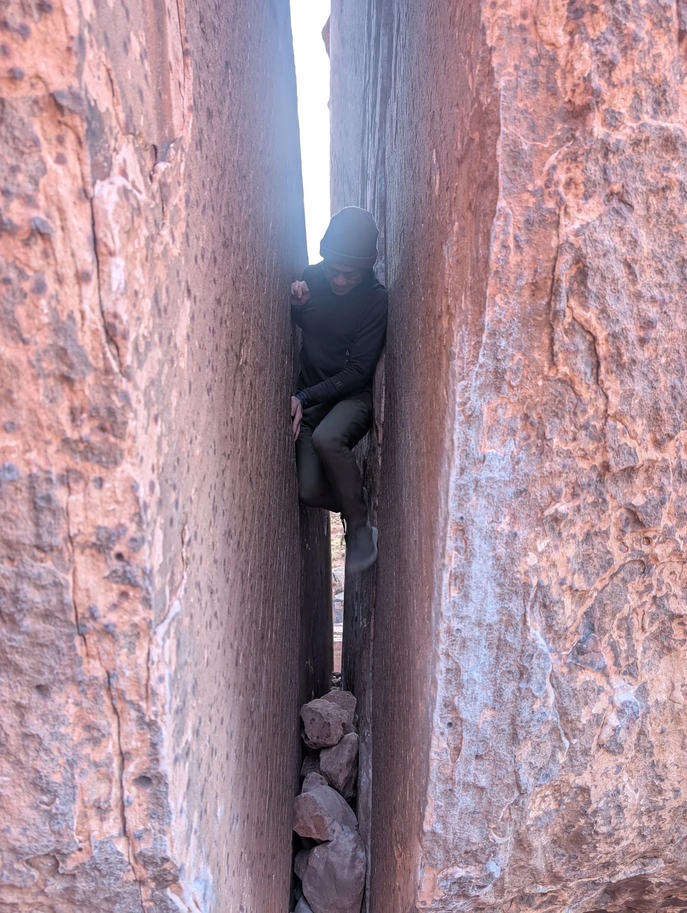
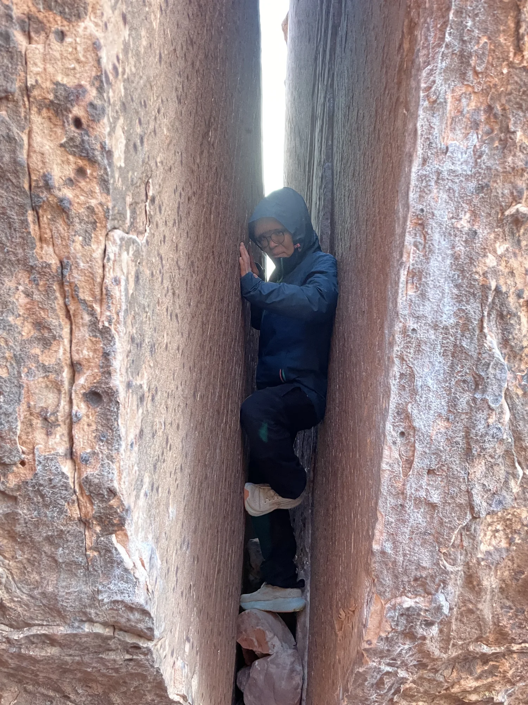
PH and ZH on Plumber’s Crack
D5 12/26
Tuna and Chips Wall
Chips and Salsa 5.3: 雖然如果和龍洞比等級應該是不只5.3（感覺暴露感較大），但依然是很愜意的傳攀路線。原本是兩繩距，但我們有繩中繩長剛好不夠所以最後用了三繩距。第一繩距ZH先鋒（用了一堆#.5-#2 cam，後半段的保護點應該要往路線外圍找，比較有更穩的位置。），挺順利的，第二和第三繩距PH先鋒，進到一個小峽谷，但小迷路了一下子，MP網站的示意圖有點看不出上切位置，到最後要靠右爬到右面的樹那邊然後從右邊的溝走下去，有種峽谷探險的溯溪感，基本上沒啥保護好放。
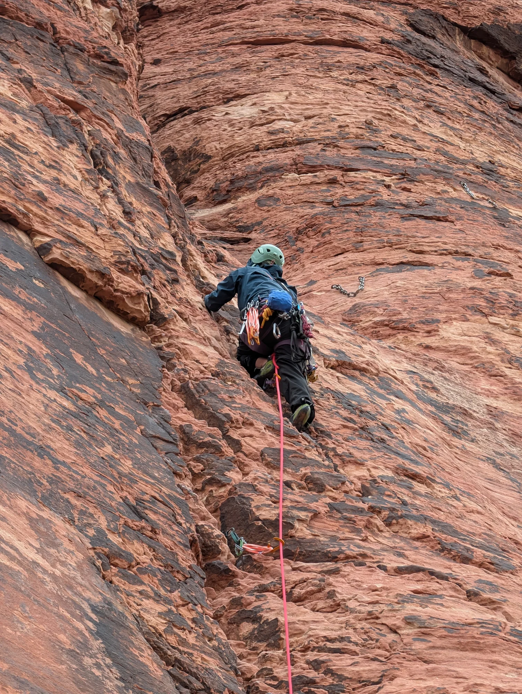
ZH on Chips and Salsa P1
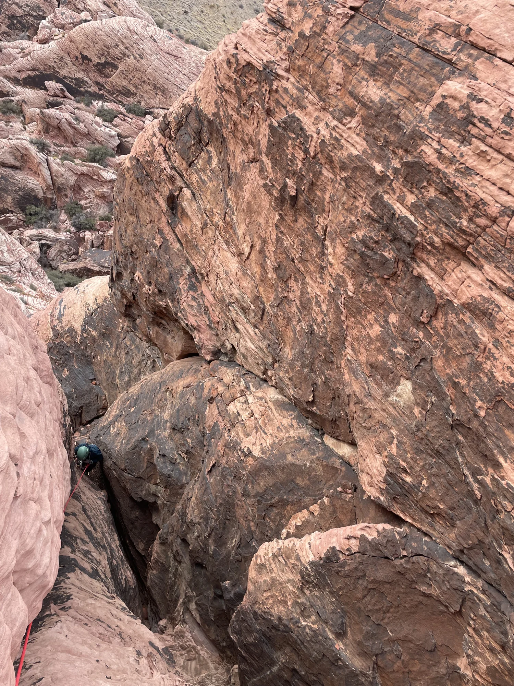
後段的酷峽谷
The Slab
What R Steak 5.9 (guidebook) / Streak on the Slab 5.10a (Mountain Project): Guidebook和Mountain Project上面寫的好像不一樣，但無論如何體感難度遠高於5.10a（MP的留言區也同意）。是訓練踩點的好路線。第一次摸了點之後第二次上去RP，雖然動作很醜但至少有send。
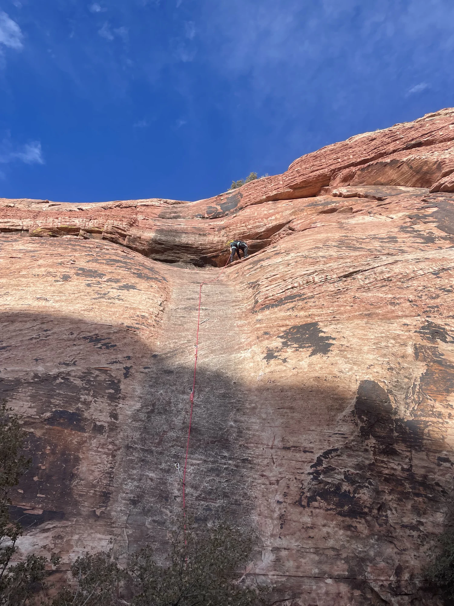
這條真的挺刺激
Slabulous 5.7: 大家一起玩猜路線的難度的遊戲，到最後大家都猜對了。這條輕鬆愜意。
D6
Riding Hood Wall
Red Spring 停車場走大約20min（從步道上切到起攀要花一點力氣和時間）
Big Bad Wolf 5.9: 簡單的多繩距運攀路線，因為我們到的時候有人在爬Physical Graffiti而這條是空的（which is quite surprsising，as we expected this one to be more popular），所以我和PH先爬了這條的第一個繩距。和Red Rock其他5.9一樣，點還是Crimp為主，但整體來說還算輕鬆愜意。
Physical Graffiti 5.6: 很讚的傳攀路線，第一繩距簡單且很好protect（雖然一開始有點小小外傾），第二繩距則是內角推撐＋掌裂隙，稍難一些。這條ZH上來爬了第一繩距之後就累了、且害怕walk off所以就下去了。第二繩距很長，且上下會喊不到，我們的70m繩會用超過繩中，最後到一個不知道哪一條路線的top anchor。Walk off我們找的路線有點抖，先確保一小段往左到另一個anchor後再往左走，切到gully後往下，但是那個gully有一些有點抖的下攀（但無論如何都比勘查過地形不可怕許多［ZH：但我覺得這種繞邊邊的比較可怕］，至少抓的和踩的東西大多數時候會是穩固的）。前一組爬這條路線的說什麼go up and left然後會很好走，可能我們走錯了。
這天比較早收，因為要去泡溫泉（見Arizona Hot Spring）。
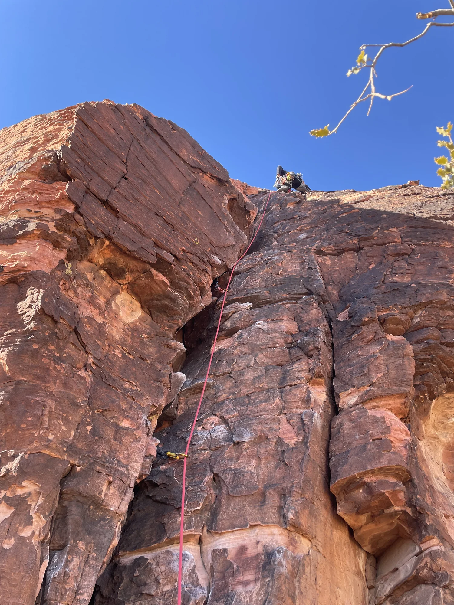
Physical Graffiti 起攀，裡面保護選擇很多
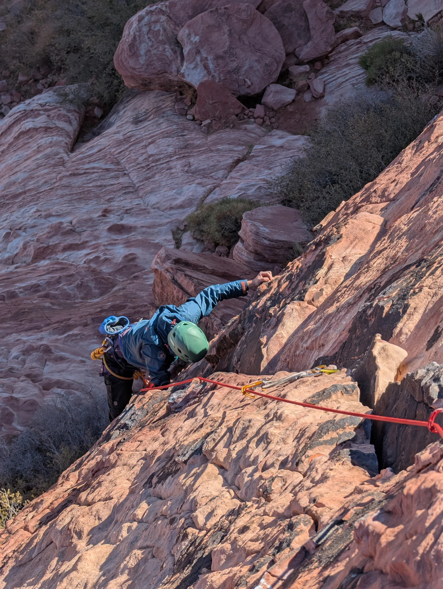
ZH following on Physical Graffiti P1
D7
Cannibal Crag
Red Spring 停車場走大約5min，讚。
A Man in Every Pot 5.8+: 熱身，bolts其實有點遠。
Caustic 5.11b: 超讚的岩角路線，左側大洞後的右邊手點要找一下，Flash go摸半天找不到好的沒爬完，第二趟完攀前敲到手肘，第三趟才send。PH即使有點感冒還是第一趟摸完動作後第二趟就send，強。
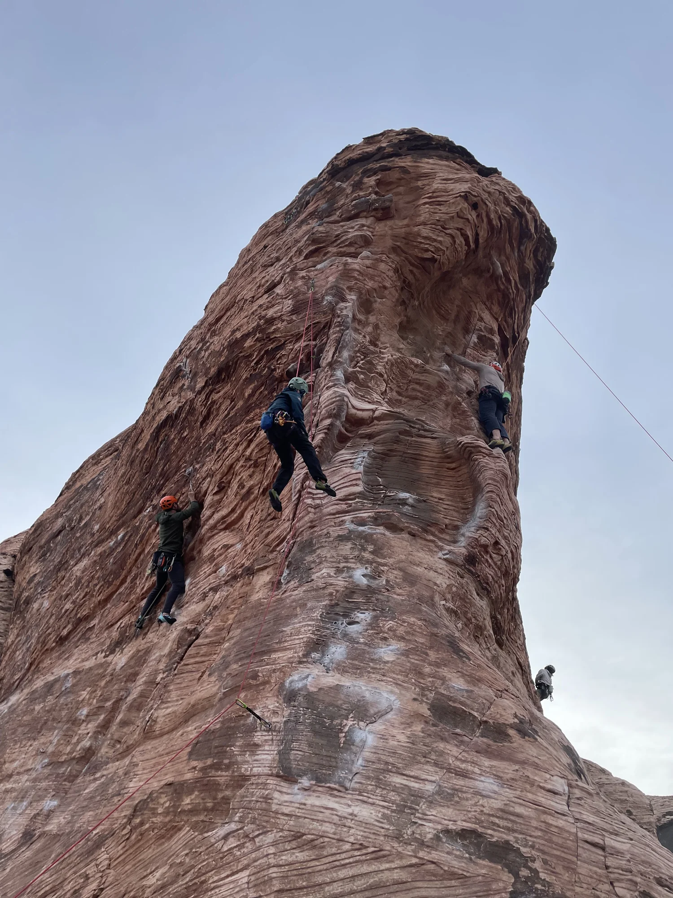
ZH on Caustic
New Wave Hookers 5.12c: Mountain Project説這區最讚的路線，確實是很不錯，但我指力/耐力不夠，第三個快扣連穩穩掛上快扣都無法。這邊有個不太好的kneebar，如果有kneepad應該會好一點。
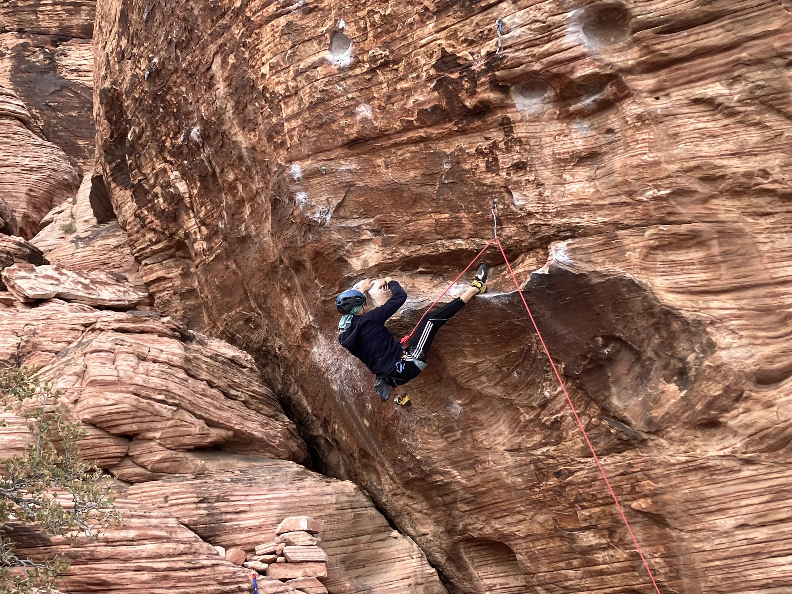
New Wave Hookers 起攀
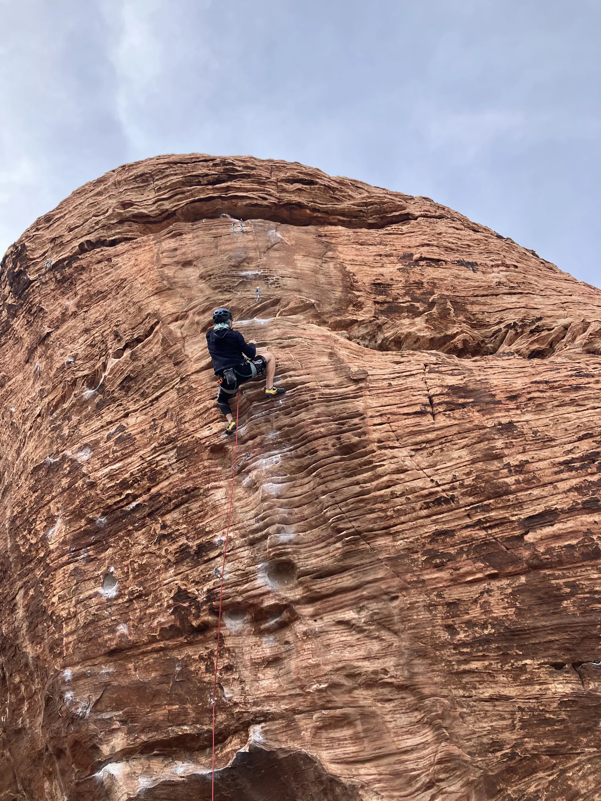
後段也不容易
後記與心得
昊謙
在攀爬過程中，這趟最大的體悟是攀爬能力的不足，不只是運攀，傳攀更是如此。雖然這裡有不少5.8以下的路線，但要注意：(a) 有些路線定級可能過於保守（sandbagged），(b) 路線難度與保護的好壞是無關的（建議攀爬前參考guidebook和Mountain Project留言）。因此，即使是5.7-5.8的路線，某些段落可能因保護不足而不能fall，實際上需要具備5.11-5.12的技術與耐力，才能穩定完成（例如找到好手點、放保護，在找到好保護之前能不fall等等）。因此，不要天真地認為選擇簡單路線即可彌補能力不足，務必提升傳攀經驗與整體攀登實力。
Red Rock有許多經典的長路線，像是Olive Oil、Cat in a Hat或甚至Epinephrine等經典路線都是6至10個pitch以上，攀登這些路線需要具備以下條件：良好的傳攀效率（此指繩索管理與交換先鋒等）、好的protect品質與效率、優秀的攀爬能力，以及足夠的心理素質。當對路線越有信心時，便能減少放保護的密度，並在必要時進行run out或link up等，才能有足夠的效率來完成這些路線。這些能力除了參加中岩課程外，仍需額外訓練與經驗累積。我個人的能力是遠遠不足的，這是這趟最多只能爬到4 pitch的主因（當然此外還有白天時間太短、對approach、descent還不太熟悉等等的因素）。
總之，Red Rock雖然風景優美、路線豐富，但挑戰也不少。要真正享受這裡的攀爬魅力，必須正視自身能力，積極訓練並累積經驗，才能好好體驗這裏的經典路線。最後也感謝旅伴們在外跟我一起受苦受難地camp 7天。
ZH
這次我只先鋒兩條，一條傳攀一條運攀，其他都是跟攀。這四天下來以Red Rock新手的角度觀察一些覺得可以注意的事情。一個是這幾天經過或遇到的運攀不少是bolt之間的間距很大，或是第一個bolt很高，覺得起攀前除了看路線難度以外，還可以先評估一下這些情況。另外一個（甚至讓我有點困擾）是這裡的傳攀或是多繩距下攀，紙本的guide book會大致說明這條路線如何descent（垂降或是walk off），但非常的大概，再加上這裡的地勢很崎嶇和凌亂（？），有時候walk off會覺得比上攀更恐怖。這部分建議可以多滑Mountain Project的評論，或是前面有繩隊剛好爬完，詢問他們的經驗是最幸運的。像是D6遇到剛爬完的繩隊表示他們descent時，有幾段walk off有自行決定上確保。
太久沒有傳攀和先鋒了，覺得本人心臟太小顆，上攀的體力也需要再練練（受限於需要先交朋友），才能當個更優質的隊友。超級感謝昊謙和PH找我來這趟攀岩露營之旅，非常carry的完成這趟旅程（我甚至一開始裝備都放在台灣，只帶了三米輔繩來掛房間的東西），還要忍受我重複Ｎ次的to climb or not to climb。